Thor 20 Plus
Puerta acorazada grado 4B
Grado 4B, 23 puntos de cierre y doble cerradura con bloqueo. Junto a la Thor 20, es la puerta que más montamos en Asturias.
- Grado 4
- UNE-EN 1627
- Clase B
- UNE 85160
- 23
- Puntos de cierre
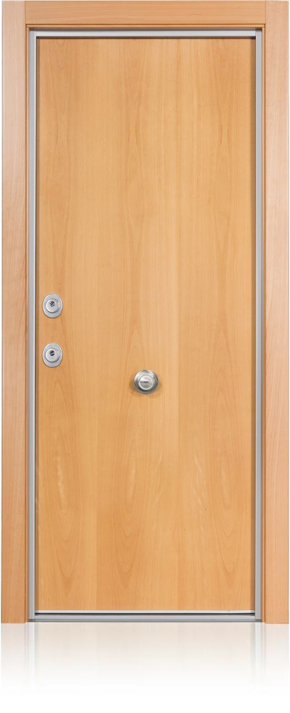
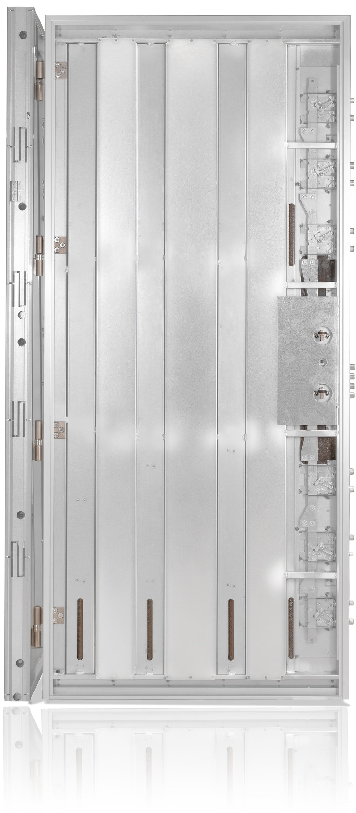
Así está hecha por dentro
Baja para desmontarla pieza a pieza.
DeslizaThor 20 Plus
Grado 4 según UNE-EN 1627 y clase B según UNE 85160, con certificado AENOR. 23 puntos de cierre contando cerradura y antipalancas.
Block con marco de acero
Chapa de acero galvanizada de 1,5 mm forrada de vinilo, con regulador de resbalón y agujeros con casquillo para cada bulón.
6 desviadores de dos bulones
Con sistema antirretroceso. Junto a la cerradura doble, la hoja queda anclada al marco de arriba abajo.
Tablero y perfil de aluminio
Perfil cromado, dorado o negro con burlete simple o doble.
Chapa galvanizada anticorrosión
Hoja de acero galvanizado con refuerzos perimetrales y 50 puntos más de soldadura.
Doble cerradura grado 7
Cerradura de alta seguridad con bloqueo y refuerzo de chapa galvanizada en toda la cerradura.
Omegas con tetracero
10 refuerzos entre omegas y en el camón, con barras de tetracero en el interior.
Chapa de manganeso
Con abocardado, antiextracción y antitaladro delante de la cerradura.
Bombillos Mauer NW4
Antitaladro, antibumping, antiextracción, anti-impressioning y antiganzúa. 5 llaves más llave de obra.
4 bisagras de seguridad
Con rodamientos y regulables en 3D.
6 antipalancas
En el lado de las bisagras, para que la hoja no se pueda sacar haciendo palanca.
Aislamiento y montaje
38 dB de aislamiento acústico y transmitancia de 3,2 W/m²K. La medimos y la instalamos en toda Asturias.
Características y opciones
Nueva Thor 20 Plus Grado 4B, probablemente la puerta más segura del mercado:
- Doble cerradura con bloqueo
- Con 10 refuerzos entre omegas y en el camón
- 4 bisagras de seguridad con rodamiento, regulables en 3D
- 23 puntos de cierre, incluyendo la cerradura y los antipalancas
- 50 puntos más de soldadura
- Con refuerzos perimetrales
- Chapa galvanizada anticorrosión
- Refuerzo de chapa galvanizada en toda la cerradura
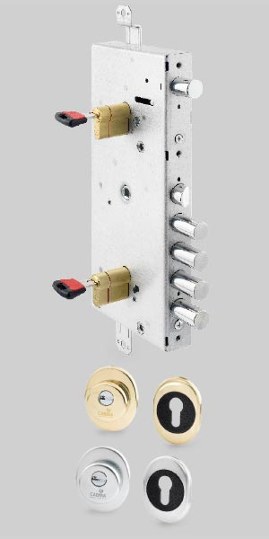
Cerradura doble de alta seguridad (Grado de seguridad 7)Cerradura de bombillo con bloqueo de seguridad 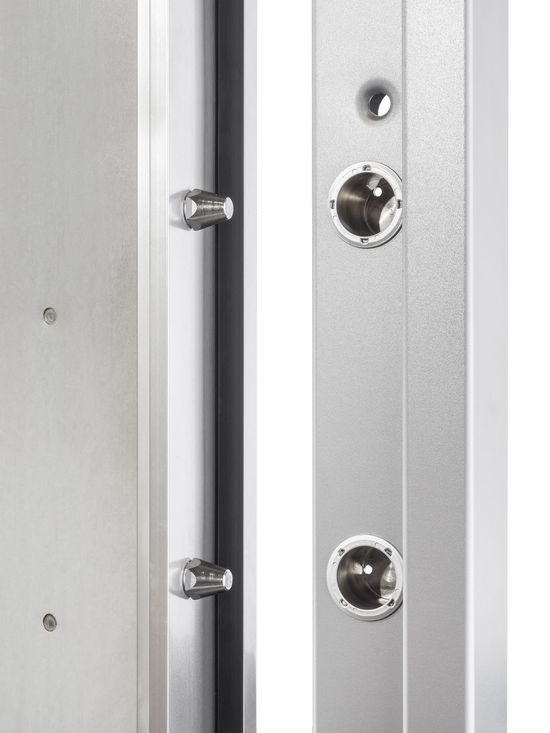
6 antipalancas lado bisagras 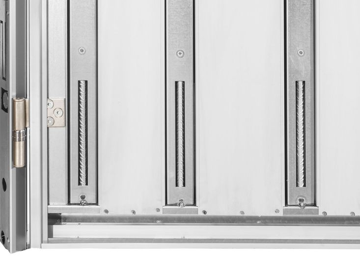
Entreomegas y camón con refuerzo interior de tetracero 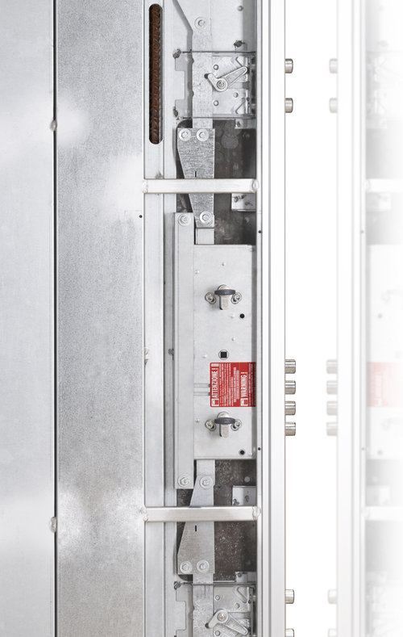
Protección antitaladroChapa de acero al manganeso, con abocardado, antiextracción y antitaladro 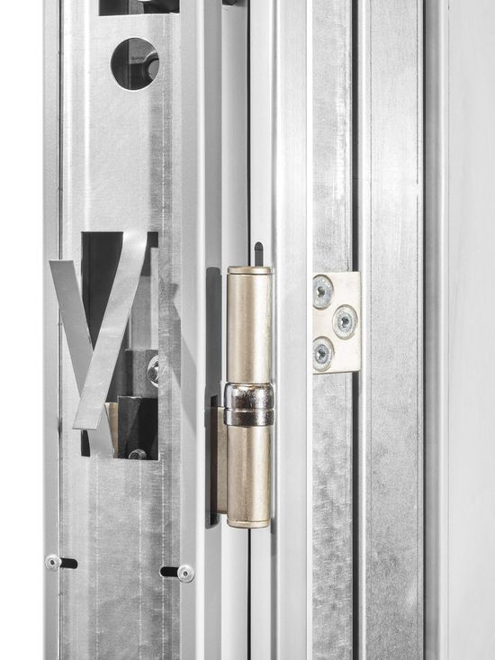
Montaje marco 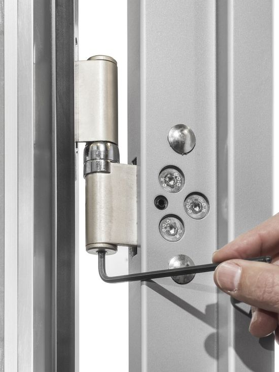
4 Bisagras de seguridad con rodamientos, regulables en 3D 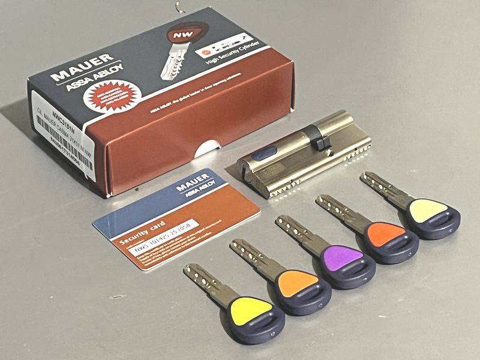
Bombillos Mauer NW4 (anti-taladro / anti-bumping / anti-extracción / anti-impressioning / anti-picking) con 5 llaves más llave de obra, llave con pin móvil y regata. 
6 desviadores de dos bulones con sistema antirretroceso 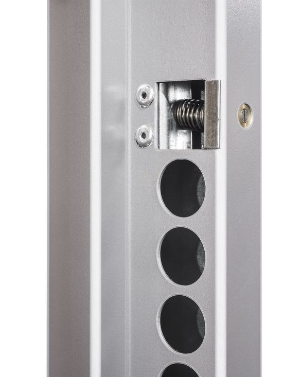
Regulador de resbalón en el marco 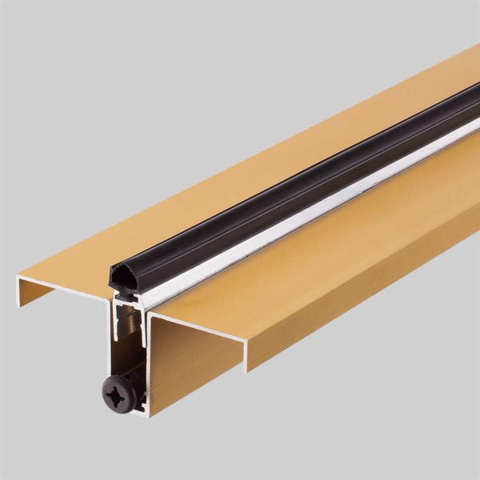
Cepillo cortavientos automático ajustable
Opcional
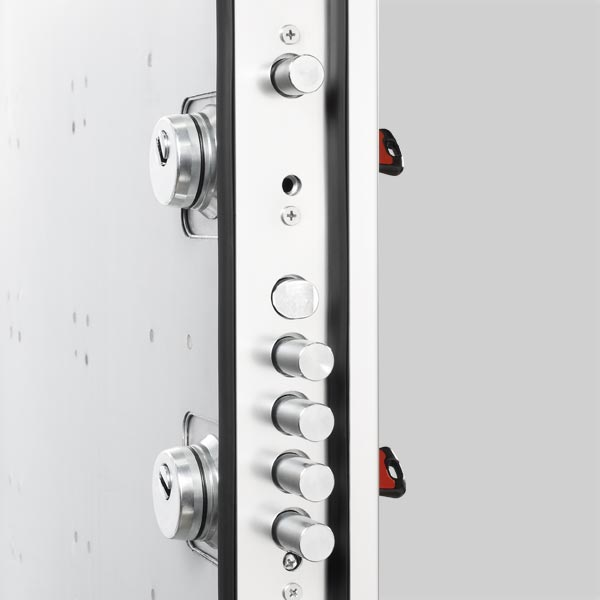
Doble burleteOpcional 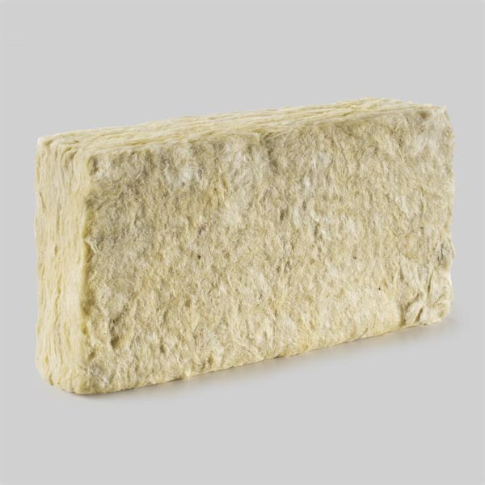
Lana de rocaAislante térmico-acústico en el interior de la puertaOpcional 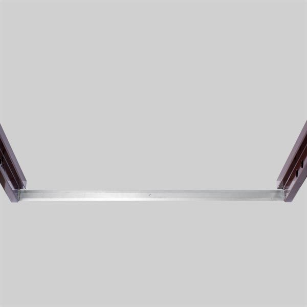
Tapa miniChapa de remate al sueloOpcional 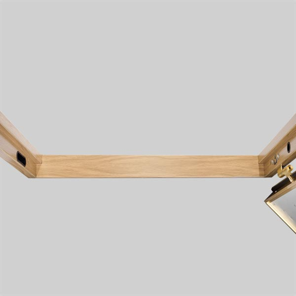
Tapa anchaChapa de remate al sueloOpcional
Acabados
Marco de la puerta de chapa de acero galvanizada de 1,5 mm, forrado de vinilo imitación maderas (sapelly, roble, haya y nogal) o colores lisos (gris inox, gris antracita, blanco y negro).

Sapelly // Roble 
Haya // Nogal 
Inox // Antracita 
Blanco // Negro
Perfil de aluminio
Acabados: Cromado, dorado y negro, todos ellos en burlete simple o doble burlete (opcional).

Cromado 
Dorado 
Negro
Con burlete
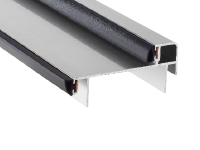
Cromado 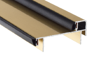
Dorado 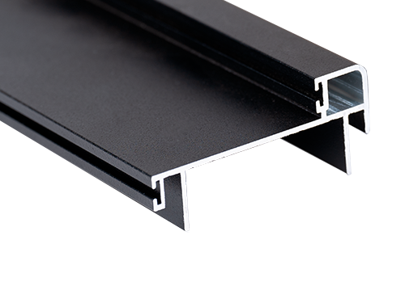
Negro
Doble burlete
Opcional
Medidas y otras características
MEDIDAS (Consultar medidas especiales)
| Estándares totales de Block | Paso real |
|---|---|
| 202 x 83 cm. | 73 cm. |
| 205 x 86 cm. | 76 cm. |
| 205 x 92 cm. | 82 cm. |
| 207 x 90 cm. | 80 cm. |
Prestaciones especiales
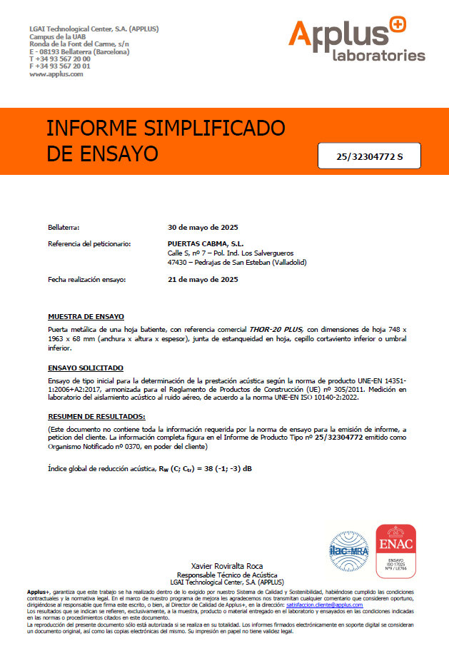
Aislamiento acústico: 38 dB
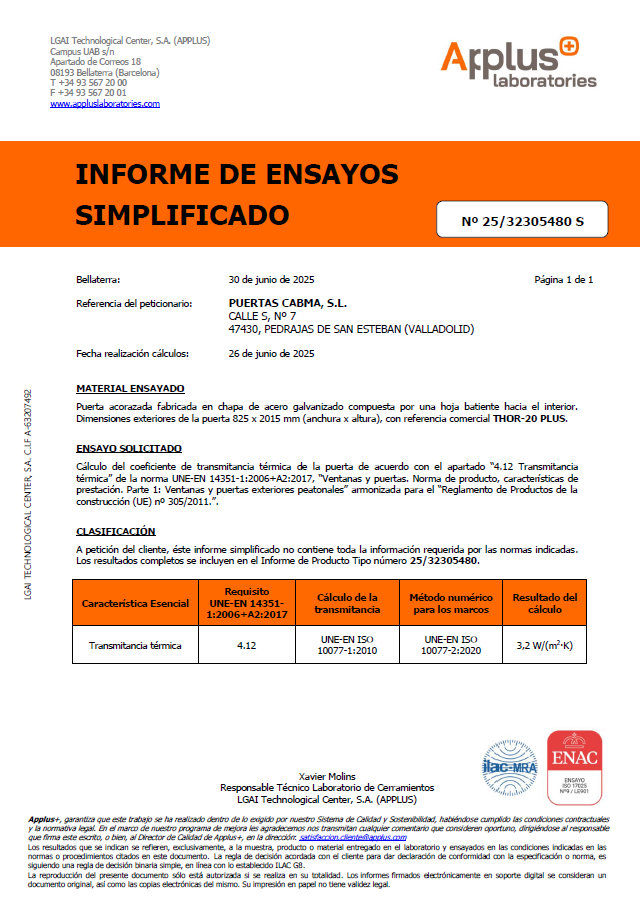
Transmitancia térmica: 3,2 W/m2K Permeabilidad al aire: Clase 1
Resistencia a la carga de viento: Clase C5
Nueva THOR-20 PLUS clase 4B
La puerta más completa del mercado
Certificados
La seguridad de la Thor 20 Plus está contrastada con ensayos normalizados en laboratorios externos acreditados. Pulsa en cada documento para verlo.
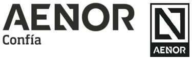
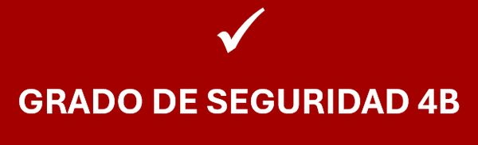
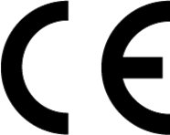
Otras puertas
Si quieres compararla, estas son las más cercanas. Compárala con ellas


Ven a verla en persona
En nuestra sede de Gijón te enseñamos las puertas CABMA y te asesoramos sin compromiso.
- Dónde estamos
- Camino de la Xacona, 40
33392 Gijón (Asturias) - Teléfono
- 985 053 052
 Pulsa para ver la ruta
Pulsa para ver la ruta